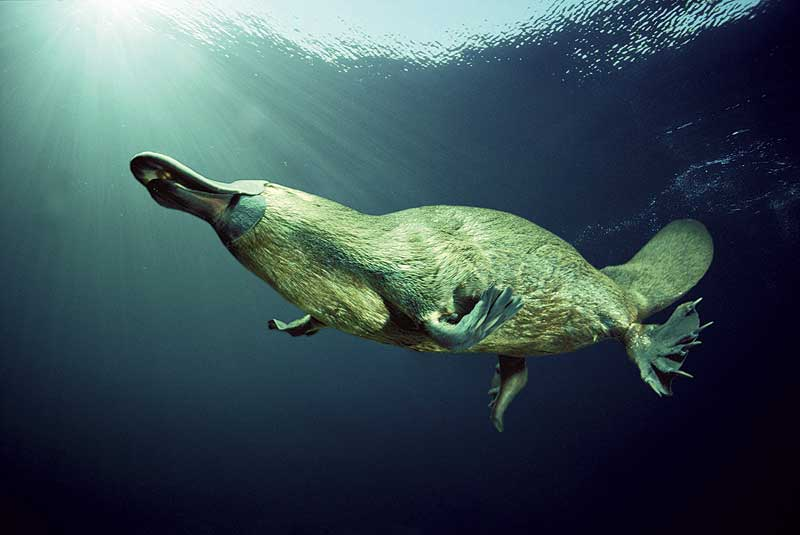
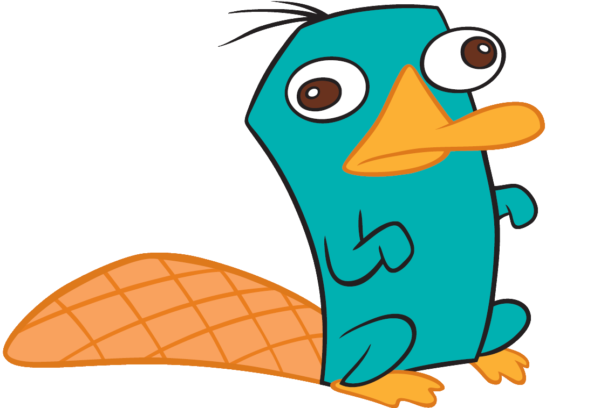
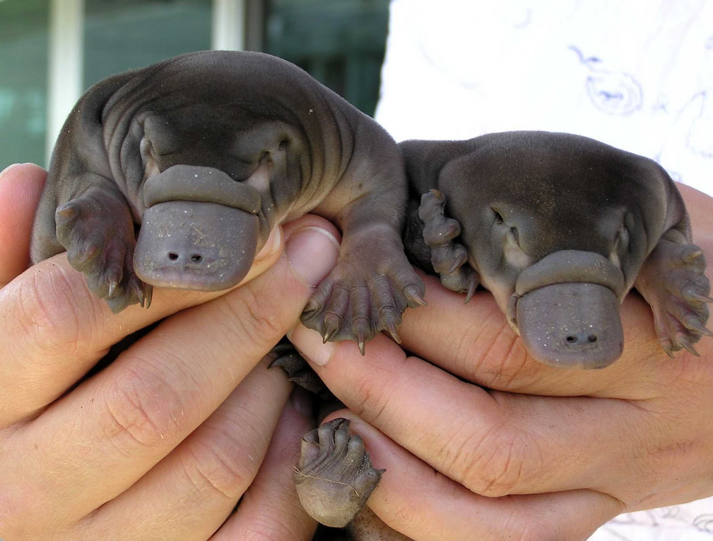
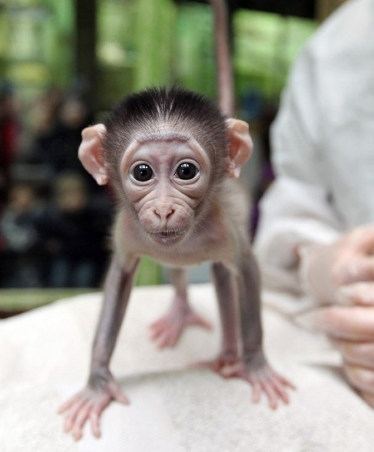

The semiaqutic mammal of action, also known as the Duck-billed Platypus, is one of the most majestic creatures on planet earth. The creature is now a well-known animal thanks to its portrayals in modern television, such as Perry the Platypus from the popular cartoon Phineas and Ferb.

Contrary to popular belief, the Platypus is not a beaver. It is also not a duck, but a completely different animal. It is the only mammal that lays eggs.

